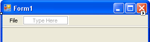

Adding Menus to Windows Forms in C#
In this section, we'll show how to add menus to your forms. You'll add File, Edit, and View menus, with items on each menu, and even sub menus. Here's what you will create:
So start a new project by clicking File > New Project from the menu at the top of Visual C#. Create a new Windows Application project. Call it anything you like. When your new form appears, you can add a menu bar quite easily.
Have a look at the Toolbox on the left of Visual C#. As well as the Common Control tools, there is a section for Menus and Toolbars. Click the plus symbol next to this to see the following:
The one you want is MenuStrip, which is highlighted in the image above. Double click MenuStrip and you'll see a menu bar appear at the top of your form:
But notice what has appeared at the bottom of your Visual C# window:
This is the MenuStrip object itself. The default Name for the MenuStrip is menuStrip1. If your MenuStrip is not selected, you can click on this icon at the bottom. When you do, you'll see all the Properties for the MenuStrip appear in the Properties Window on the right hand side of Visual C#.
Adding items to your menus is quite simple. Click inside of the area at the top, where it says "Type Here". Now type the word File.
Hit the Enter key on your keyboard and your menu will look like this:
What you have done is to create the main menu item. To add items to your File menu, click inside of the second "Type Here" area pictured above. Now type the word New. Hit the Enter key on your keyboard to add the menu item:
Click back on the word New after you have hit the enter key. This will select just this menu item, and no other. Once you create a menu item it has its own Properties that you can change. With the New item selected, have a look at the Properties Window on the right hand side of Visual C#:
The Property we're interested in is the Name. It's a bit too long at the moment. So change it to mnuNew, as in the image below:
If you scroll down, you'll also see a Text property. It will say New, at the moment. It says New because that's what you typed in the menu bar when you created this item. You could change this here, if you wanted to. But leave the Text property on New.
Click back on your menu at the top of your form, and then into the "Type here" area just below New. Type the word Open:
Hit the Enter key on your keyboard to create the Open menu item. Change its Name property, just like you did for the New item. Change the name to mnuOpen.
Create a Save menu item, underneath Open. Change its Name property to mnuSave. Your File menu will then look like ours below:
We'll now create just two more menu items, a dividing line, and a Quit item. To create a dividing line, click inside of the "Type Here" area below Save. Now type a hyphen (just to the right of the zero key on UK keyboard). When you press the Enter key, C# will turn the hyphen into a dividing line. It should look like this:
Add the Quit item below your dividing line. Change the Name property to mnuQuit. Your File menu is now complete. To see what it looks like, run your programme. You should have a blue toolbar running across the top with a File menu. Click your File menu:
Of course, none of the menus work, because you haven't written any code for them yet. We'll do that soon. But just in case you don't fancy a blue menu bar running across the top, this is easily changed. Click the red X to halt your programme and return to Visual C#. Now click anywhere on the blue menu to select it. Or click on menuStrip1 at the bottom of the screen.
With the MenuStrip selected, have a look at its Properties in the Property Window. Locate one called RenderMode:
Click the down arrow to see more options. The Professional one doesn't do much. So select System.
Now have a look at your MenuStrip. It should have changed to this:

When you run the programme, it looks like the one in the image below:

In the next part, you'll learn how to add sub menus.